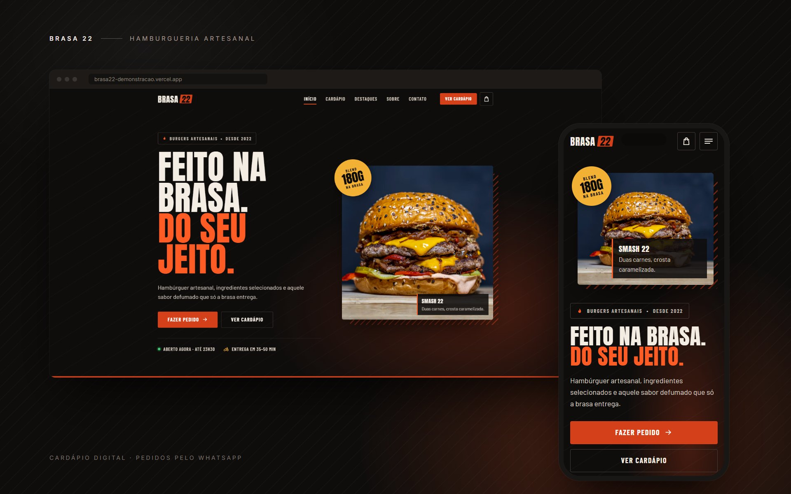
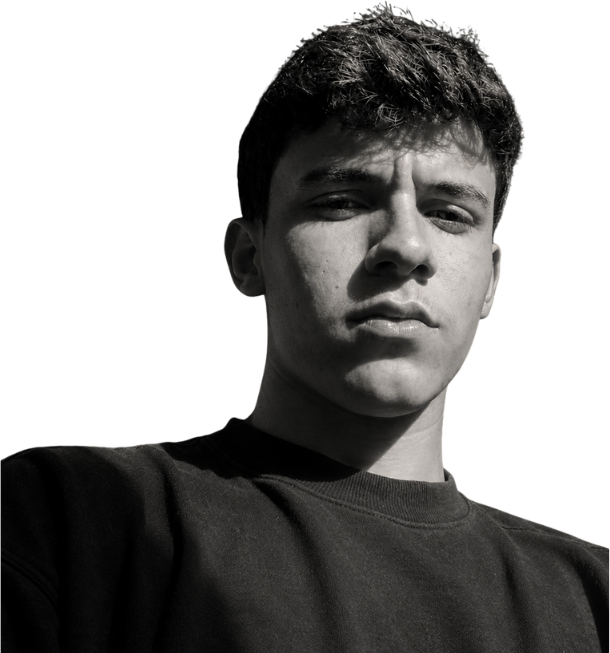
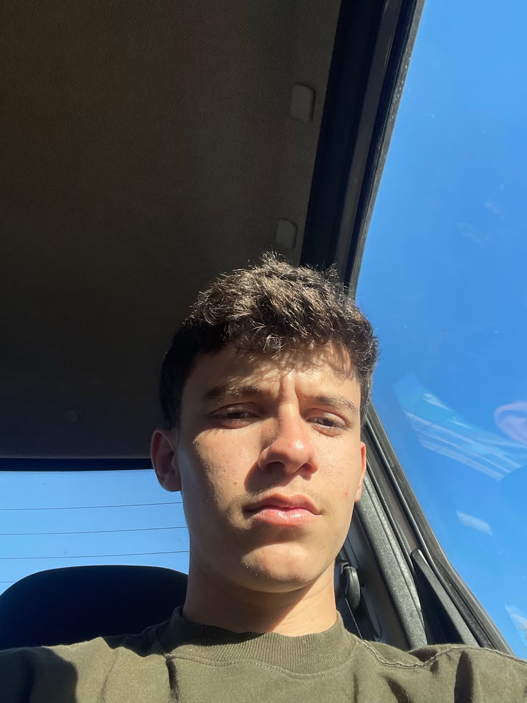
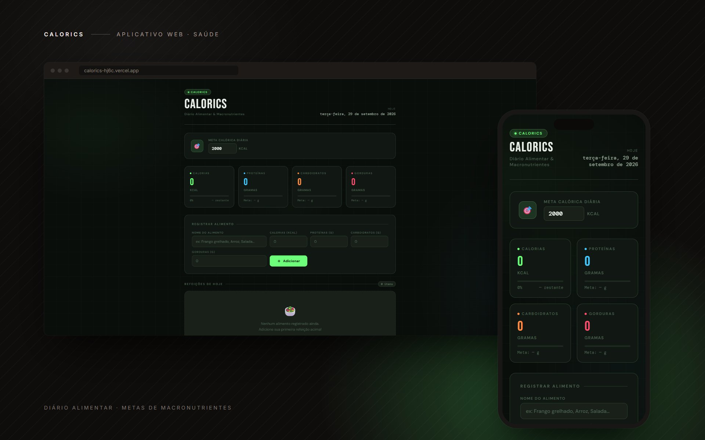
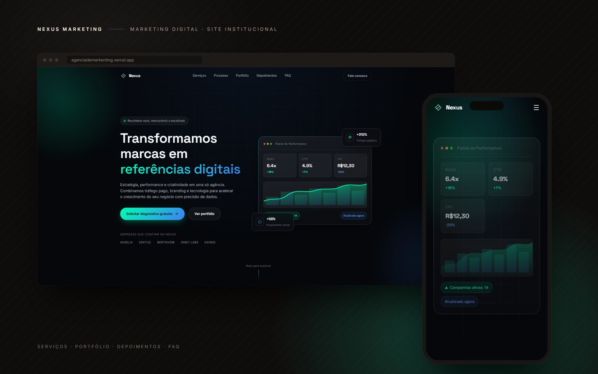
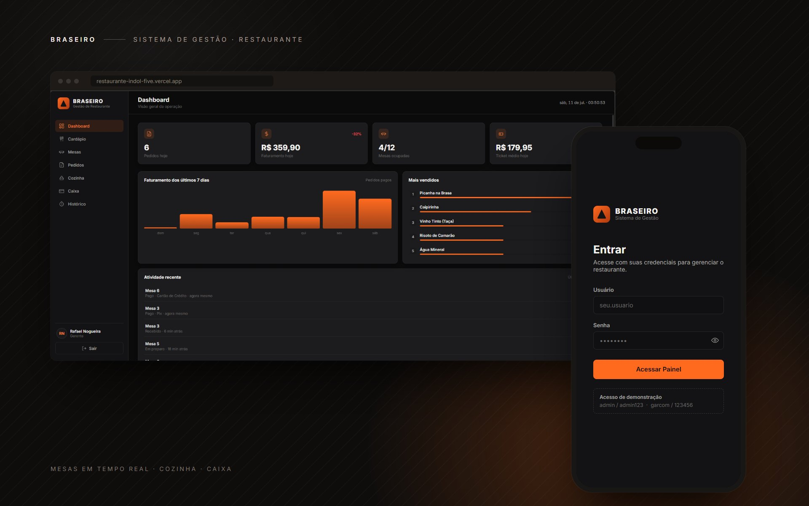
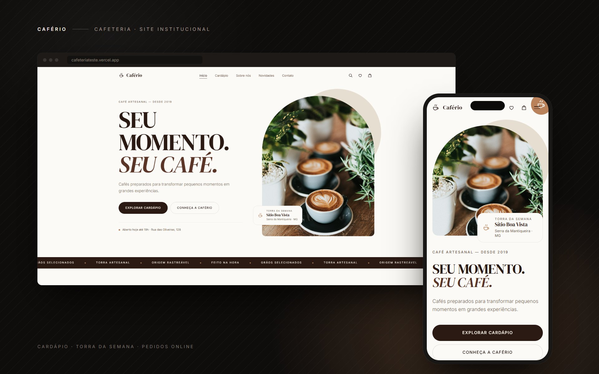

Ver projeto ↗Brasa 22
Site para hamburgueria artesanal com cardápio digital, carrinho e pedidos enviados pelo WhatsApp para entrega ou retirada.

01Desenvolvedor Web
Desenvolvedor web em constante evolução, transformando ideias em projetos reais com foco em performance, design e experiência.

Sou um desenvolvedor Front-end e Web Designer apaixonado por transformar ideias em interfaces modernas, funcionais e memoráveis.
Cada projeto é uma oportunidade de unir estética e performance, criando experiências digitais que realmente conectam pessoas e marcas.
Estou constantemente aprendendo novas tecnologias e explorando tendências de UI/UX. Acredito que um bom design começa com a atenção aos detalhes e termina com um código limpo e bem estruturado.
Formação, experiência e contatos em um só documento.
Baixar currículo (PDF)Uma seleção de projetos que refletem meu cuidado com design, código e experiência do usuário.

Ver projeto ↗Site para hamburgueria artesanal com cardápio digital, carrinho e pedidos enviados pelo WhatsApp para entrega ou retirada.
 Estudo de caso ↗
Estudo de caso ↗
Site institucional demonstrativo para agência criativa de branding e design, com serviços, portfólio e processo de trabalho.

Ver projeto ↗Aplicativo para controle de calorias diárias, com registro de refeições e acompanhamento de metas nutricionais.

Ver projeto ↗Site institucional demonstrativo para agência de marketing digital, com serviços, portfólio, depoimentos e FAQ.

Ver projeto ↗Sistema de gestão para restaurante com controle de mesas em tempo real, cardápio, painel de cozinha e caixa.

Ver projeto ↗Site para cafeteria artesanal com cardápio, torra da semana, novidades e pedidos online.